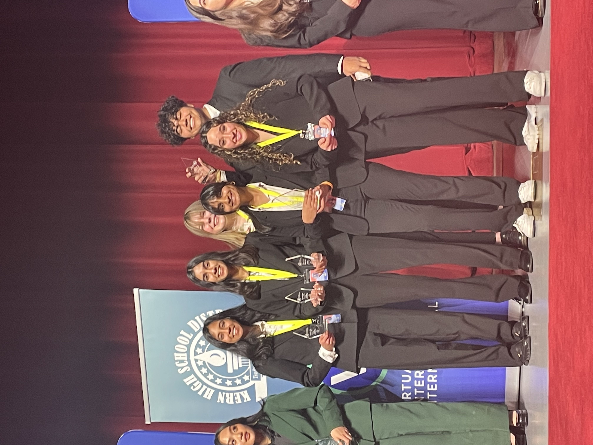

Portfolio



Hello! My name is Eppanapally, and I am a first year student at the University of California, Riverside. I'm currently majoring in business, with no speciality yet, but looking into finance and marketing.
If I was to describe myself in three words, they would be leader, problem solver, and persevering. As an Eagle Scout, I spent a majority of my time in scouting as a leader, having to allocate tasks and responsibilities accordingly amongst a team, and recognizing different skill sets to utilize at different points in a task in order to make everyone involved. This aspect of leadership transferred to my academic life when I headed the HR department of my business plan team in High School. This activity requires high level thinking in order to run the club like an actual business, and with the help of my classmates, I ended up qualifying and placing in the top 20 business teams in the world. Going towards my second aspect of problem solving, I am someone who cannot rest until a task is done. If someone were to give me a problem or issue, regardless of my expertise on the material, I would do my utmost best to research and troubleshoot the issue, and if I couldn’t solve it in the end, I would collaborate with experts and colleagues on the issue. An example of this is when I took a Python language class over the summer. It was held online, so there was no instructor to ask for directions or help. If faced with an issue, I would try to solve it for weeks sometimes, checking what others might have said online, and asking my close friends and family for help when needed. In my personal experience, having multiple channels of information proves especially helpful when trying to efficiently solve an issue that one may not be a complete expert at. On my last point of perseverance, I have never been one to give up halfway on something that I truly believe in. When I was in scouting, I had to go on a 15 mile hike through the desert. I was partially injured at that time, but was the most qualified scout to lead my troop through. Although physically my body was failing me at times, I made sure to keep my mental sharp, and put the morale and needs of my troop above my own.
In my academic career, I held leadership positions in numerous clubs and organizations. In school, I was a highly active board member of my debate and Model United Nations teams, qualifying to the state level in both activities, as well as taking on mentorship positions. I was the HR director of my Virtual Enterprise business: Accelera. We were a gym service for high school students that worked with school districts to improve student mental health through access to proper physical exercise and diet planning. We went on to place in the top 20 businesses amongst 120+ businesses from over 70 countries.
• Team manamgement
• Task distribution
• Experience with public speaking, task management, and manager roles
• Responsible for leading groups of diverse indivisuals to complete mentally and physically challenging tasks.
• Problem solving and time management skills
• Made company policies and regulations
• Reviewed contracts
• Created a payement structure and heirarchy
• enganged in employee relations and culture